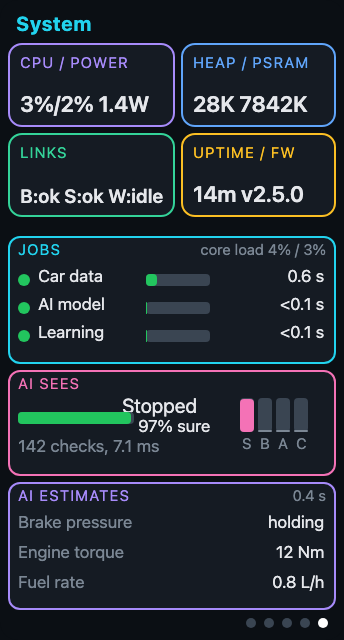

OpenCarMind
Open-source OBD2 logger for the ESP32,
with TinyML on the chip
 CarMind R.E.V, 66 KB, keeps learning your car
CarMind R.E.V, 66 KB, keeps learning your car CarMind E.V, 89 KB, fixed and tested
CarMind E.V, 89 KB, fixed and tested- Bluetooth LE ELM327 adapters. No phone, no account, no cloud
- Open source, MIT licence
Open-source OBD2 logger for the ESP32,
with TinyML on the chip
CarMind R.E.V, 66 KB, keeps learning your carCarMind E.V, 89 KB, fixed and tested

